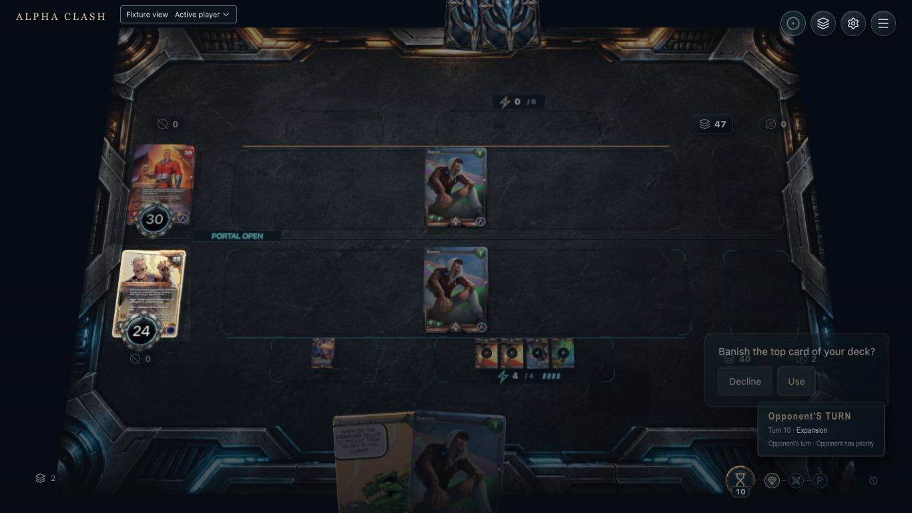
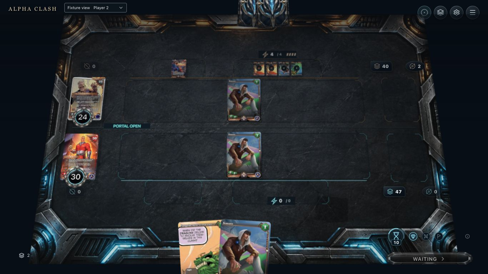
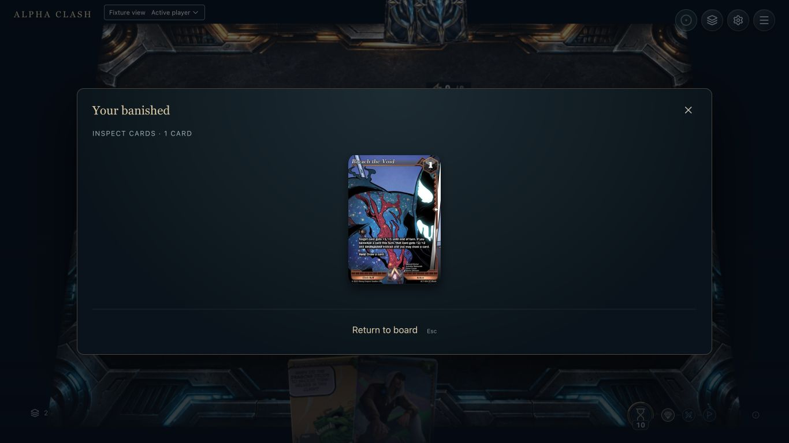
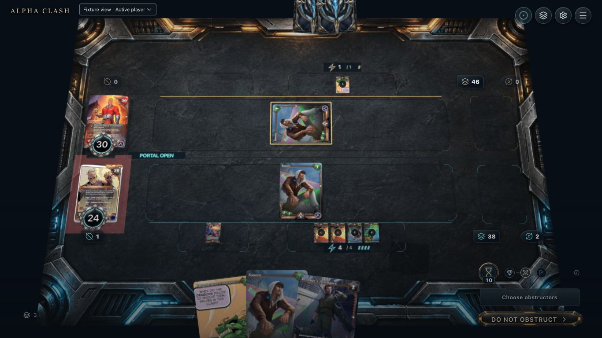
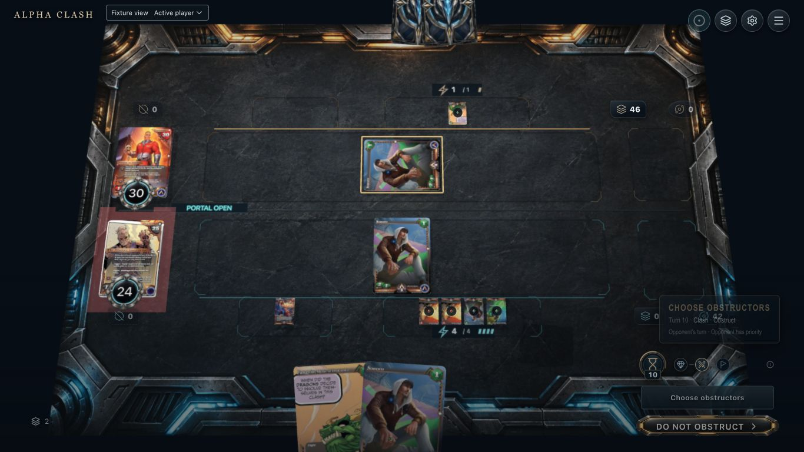
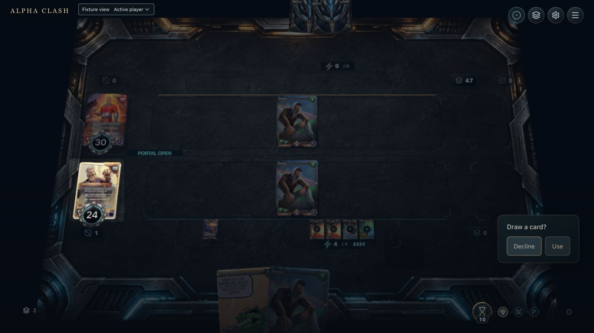
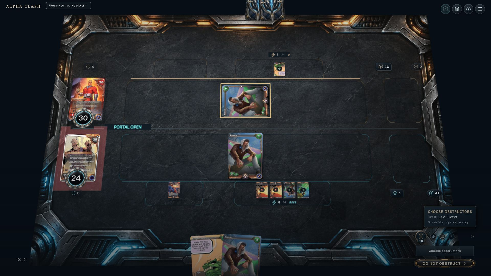
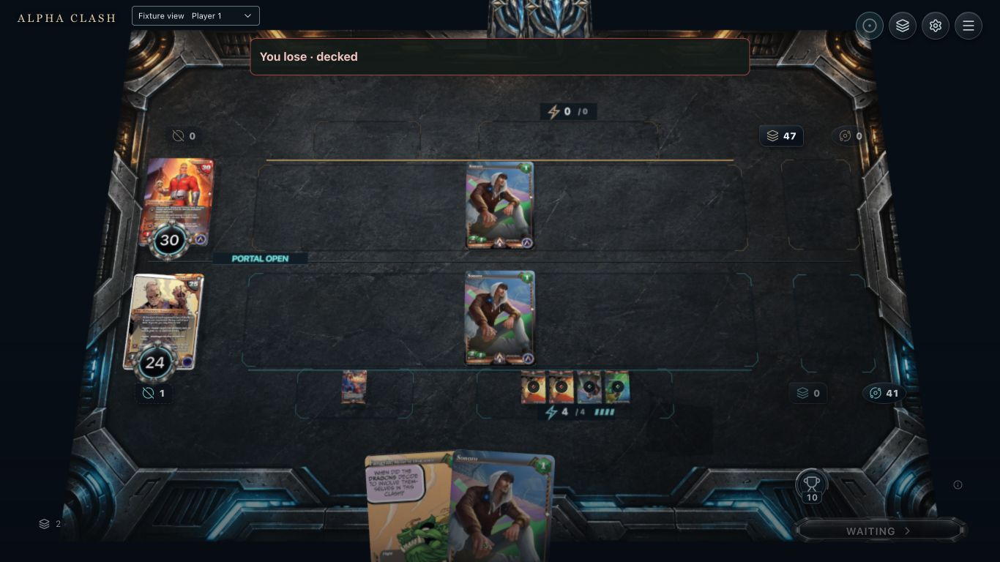
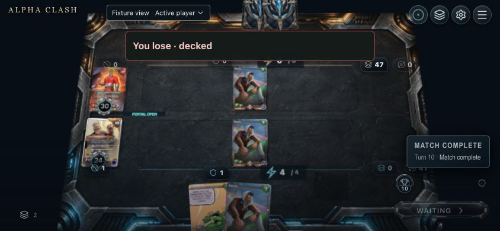

Official native optional-void fixture. Views combine separate reset runs. Captions distinguish observed chain stages from presentation proposals. The first accepted choice is irreversible; a remaining optional draw does not cancel the mandatory Void draw.
Captured native top-card choice after End turn. Top identity is still hidden. Proposed: public Contender source → anonymous deck back → Banished destination.

2
2. Hover / focus
Captured keyboard focus on Use without submission. Proposed: source label and consequence summary; do not expose the top face before acceptance.
3
3. Selected / first action accepted
Captured committed top-card banish: deck 39, hand two, Banished one. Second draw is optional. Proposed: source The Absence plus a separate queued Breach Void chip. No reversible selection draft exists.

4
4. Pending / non-owner
Captured settled Player 2 Waiting during the owner decision. Proposed: public source context without private deck/hand faces. This view precedes submission, not a fabricated acknowledgement.

5
5. Resolving / chain context
Captured public Breach the Void inspection while the parent optional draw remains undecided. Mandatory Void has not drawn yet. Proposed: source-linked queued trigger and accepted transfers; this is not a recorded flight frame.

6
6. Completed
Captured after declining only the parent draw: native mandatory Void increases hand two → three, deck 40 → 38 and Banished zero → one. Bot later starts its own legal clash; evidence does not resolve that clash.
Paired baseline recordings
Fresh End turn → Use top-card banish → Decline parent draw. Mandatory Void still draws: deck 38, hand three, Banished one, health 24/30. Normal has app audio; mute/reduced output is digital silence. Both include later bot play, stopping at human obstruction. These clips do not approve cue quality or renderer performance.
Normal motion and app output.Muted and reduced motion; settings applied after reset.
Depletion boundaries and result view
Separate native reset runs. The first accepted banish cannot be cancelled by declining the later optional draw. No fictitious top-card face is shown before acceptance.

7
Empty before trigger
End turn reaches the next normal clash without a Void choice. Deck zero and hand two remain. The bot action is separate.

8
Last card banished
Deck zero, hand two, Banished one. Decline affects only this parent draw; the queued mandatory Void draw can still end the game.

9
First choice declined
No card banished or drawn. Deck one remains. Native bot play follows; no terminal state.
10
Winner view repaired
Settled Player 2 board and result agree: You win. Raw decked is still a poor explanation; disabled Waiting remains.

11
Loser view
Settled Player 1 sees You lose with the same terminal counts. No gameplay inputs remain.

12
Scaled landscape
Both Use choices by Enter cause deck-out. Banner remains readable; physical touch and reason wording need further work.